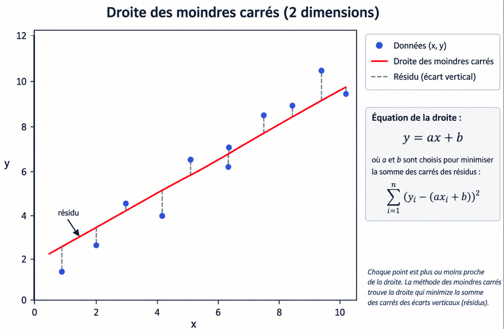
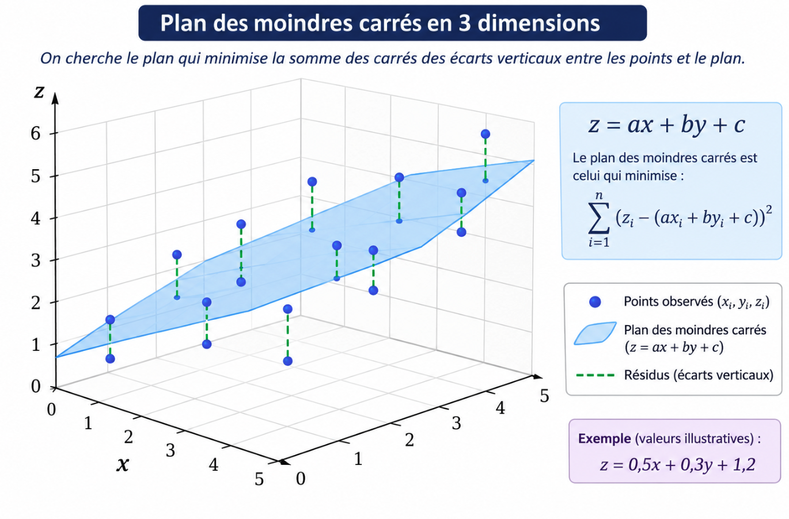
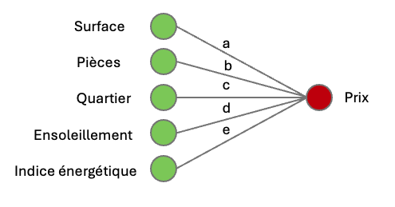
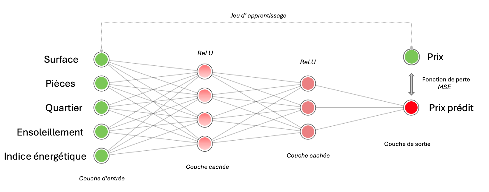
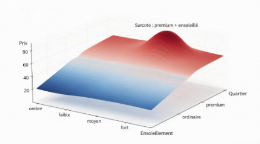

Comprendre que la taxonomie des IA est une taxonomie d'objectifs, pas de mécanismes
Tous les modèles suivants partagent la même architecture de base : des couches de neurones qui effectuent des sommes pondérées et des activations, mais ils cherchent à répondre à différents objectifs.
Une fonction de perte est une transformation
mathématique qui amplifie ou pénalise davantage certaines
erreurs et donc oriente l'apprentissage.
Plus la pénalité est élevée, plus le modèle va
fortement corriger ses poids pour éviter de refaire la même
erreur.
| Objectifs | Données d'entrée | Tâche | Sortie | fonction de perte | Interprétation | Exemple |
|---|---|---|---|---|---|---|
| Classification | Images, texte, caractéristiques (features) | Classer | Probabilité par classe | Cross-entropy | Étiquette la plus probable | Chat vs. chien |
| Traduction | Texte (langue source) | Traduire | Séquence de tokens | Cross-entropy | Texte dans la langue cible | "Bonjour" → "Hello" |
| Génération | Texte, prompt | Générer | Séquence générée | Cross-entropy | Contenu nouveau | Suite de texte |
| Régression | Nombres, caractéristiques | Prédire | Nombre continu | MSE | Valeur numérique prédite | Prix d'une maison |
| Renforcement | État de l'environnement | Agir | Action + politique | Récompense cumulative | Stratégie optimale | Jeu d'échecs |
Les fonctions de perte orientent le réseau de neurones vers des objectifs précis en privilégiant ou pénalisant certaines réponses lors de l'apprentissage
Cette prise en compte va redresser les erreurs de trajectoire par des revirements brutaux
Objectif |
Source exemple |
Cible | Prédiction | Score de confiance | Pénalité |
|---|---|---|---|---|---|
| Classification | Chat | ✗ Chien | 53% | faible, correction standard | |
| 95% | 🔥 Enorme, correction forte des poids du réseau. | ||||
| Traduction | I | Je | ✓ Je | 99% | très faible |
| love | aime | ✗ admire | 95% | 🔥 Enorme, correction forte des poids du réseau. | |
| 18% | faible | ||||
| cats | chats | ✓ chats | 98% | très faible | |
| Génération | "Il était une" | "Il était une fois..." | ✗ "Il était une bergère" | 92% | 🔥 Enorme, correction forte des poids du réseau. |
| 23% | faible, correction standard |
Pour éliminer les éventuels points aberrants
MSE éleve au carré les erreurs, ce qui va pénaliser
les grosses erreurs (et éliminer les signes négatifs):
Une erreur de 10 devient 100, une erreur de 100 devient 10
000 — soit une pénalité 100 fois plus forte.
On cherche par exemple à prédire le coût d'un logement selon
différents critères en se basant sur un jeu de données issu
d'un recensement préalable.
En apprenant à partir des données collectées, le réseau
produit un modèle de calcul : prix (critères)
C'est une approche classique déjà utilisée bien avant les réseaux de neurones.


Les calculs restent identiques pour n dimensions (mais on ne
peut plus les visualiser au-delà de 3D).
L'exemple suivant représente l'équation d'un hyperplan à 5
dimensions. Comme en 2D ou en 3D, cet hyperplan reste
parfaitement linéaire :
c'est
une surface plane généralisée à un espace
multidimensionnel.

Le modèle est linéaire : toute variation d’une
variable d’entrée entraîne une variation
proportionnelle de la prédiction.
(si on augmente la surface de 10 m², le prix
augmentera toujours de a × 10,
quel que soit le nombre de pièces ou
l’ensoleillement)
Avec le même jeu d'entraînement mais avec des couches cachées utilisant des fonctions non linéaires (comme ReLU), on autorise des courbes de séparation au lieu de droites.


En apprentissage par renforcement,
le réseau de neurones prend l'état de l'environnement
en entrée et produit une politique (action à
exécuter) ou une valeur Q (estimation de la
récompense future).
La récompense cumulative guide l'ajustement des poids
: plus la récompense finale est élevée, plus les actions qui
y ont conduit sont renforcées dans le réseau.
Objectif |
Architecture du réseau | Entrée (État) | Sortie du réseau | Action choisie | Récompense finale / Mise à jour |
|---|---|---|---|---|---|
| Échecs (AlphaZero) |
Réseau convolutif (20 couches) → Tête de politique → Tête de valeur |
Position échiquéenne (tableau 8×8×12) |
Politique : probabilités pour chaque coup possible (1982 actions) Valeur : estimation du résultat |
✓ e4 (meilleur coup) | +1.0 (victoire) → Renforcement fort des poids pour cette politique |
| ✗ d4 (mauvais coup) | -1.0 (défaite) → Affaiblissement des poids pour cette politique, renforcement de e4 | ||||
| Labyrinthe (DQN) |
Réseau convolutif (3 couches) → 4 neurones de sortie |
Image 84×84 du labyrinthe |
Q-values pour : ↑ Haut, ↓ Bas, ← Gauche, → Droite |
✓ → (droite, vers la sortie) | +10.0 → Mise à jour des poids : Q(→) augmente fortement |
| ✗ ↑ (haut, dans un mur) | -5.0 → Mise à jour : Q(↑) diminue, Q(→) augmente |
Un réseau de neurones artificiel produit un
modèle pendant
la phase d'entraînement
(apprentissage) (cf. Chapitres 1, 2 et 3).
Les supports de la phase d'entraînement sont des milliers de
machines équipées de GPU (Graphic Processing Unit,
spécialisées dans les opérations mathématiques parallèles).
Le modèle (une matrice de chiffres) est ensuite
exploité pendant
la phase d'inférence pour faire
des prédictions sur de nouvelles données.
Selon leur taille, les modèles peuvent être déployés sur de
simples smartphones, des ordinateurs personnels, des
serveurs cloud ou dans des datacenters complets pour les
plus imposants.
| Critère | Phase d'entraînement | Phase d'inférence |
|---|---|---|
| Objectif | Apprendre (ajuster les poids) | Prédire (appliquer le modèle) |
| Matériel | GPU/TPU puissants, clusters | CPU, smartphone, cloud léger |
| Calculs | Forward + Backward (gradients) + Mise à jour | Uniquement Forward (pas de gradients) |
| Données | Jeu d'entraînement (labelisé) | Nouvelles données (non labelisées) |
| Sortie | Modèle entraîné (matrice de poids) | Prédictions (classification, régression, etc.) |
| Fonction de perte | Oui (ex: Cross-entropy, MSE) | Non |
| Mise à jour des poids | Oui (via l'optimiseur) | Non |
Ce chapitre révèle une vérité fondamentale sur l'IA :
La taxonomie des IA n'est pas une taxonomie de mécanismes, mais une taxonomie d'objectifs.
Que ce soit pour classer, prédire, traduire, générer ou agir, les modèles utilisent les mêmes briques de base : des neurones artificiels organisés en couches.
Ce qui change, c'est :
Cette compréhension est essentielle pour :
Dans les prochains chapitres, nous allons explorer comment ces mécanismes s'appliquent à un domaine spécifique : le langage (Chap. 5), les probabilités (Chap. 6), ou la planification (Chap. 7).